Ο ΕΥΚΟΛΟΤΕΡΟΣ ΤΡΟΠΟΣ:
να έχετε υγιεινές διατροφικές συνήθειες και να
χάσετε 78 κιλά σε 10 εβδομάδες
Στα 31 μου χρόνια, ζύγιζα 138 κιλά και έμοιαζα σαν φάλαινα. Είχα την τύχη να βρω έναν αποτελεσματικό τρόπο ρύθμισης της διατροφικής συμπεριφοράς μου, ώστε να τρώω τα πάντα και να χάσω βάρος. Εδώ και 6 μήνες τρώω ό,τι θέλω και πλέον ζυγίζω 60 κιλά. Νομίζω ότι ήρθε η ώρα να μοιραστώ την ιστορία επιτυχίας μου.
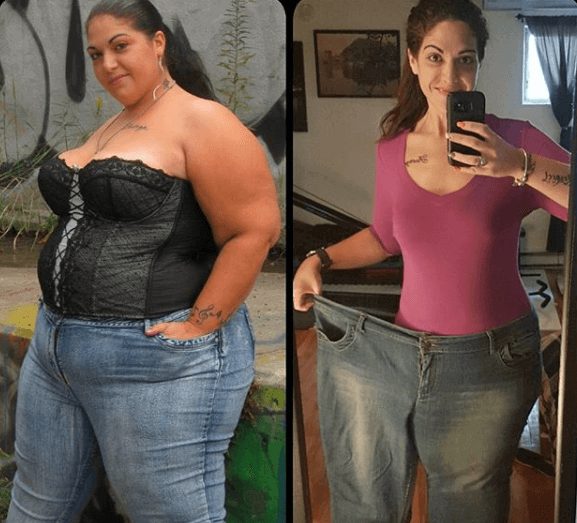Γιατί να μην αρχίσετε να γυμνάζεστε;
Οι αδύνατοι φίλοι μου των οποίων ο μεταβολισμός ήταν ταχύτερος από του Γιουσέιν Μπολτ προσπάθησαν να με «παρακινήσουν» να ξεκινήσω γυμναστήριο: μου έλεγαν ότι έχω πατσοκοιλιά, είμαι χοντρή σαν γουρούνι, χοντροκώλα, τεράστια σαν ελέφαντας, καθώς και πολλά άλλα προσβλητικά παρατσούκλια. Όλοι χωρίς αποτέλεσμα.
Υποστήριζα ότι δεν με ενοχλούν και γελούσα μαζί τους. Προσπαθούσα να μην τρώω σε δημόσιο χώρο αλλά κάθε βράδυ έκλαιγα, και ανακούφιζα τον εαυτό μου με τόνους ζουμερά κεφτεδάκια, ζυμαρικά, βάζα παγωτού και άλλα τρόφιμα.
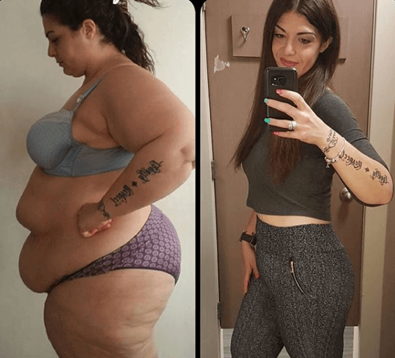Η δίαιτα με έκανε να υποφέρω τόσο πολύ!
Εκείνοι που με κορόιδευαν ότι ήμουν υπέρβαρη, δεν μπορούν να φανταστούν πόση προσπάθεια έκανα με όλα τα είδη διαιτών, πόσες δάκρυα έριξα στο μαξιλάρι μου...
Χαστούκιζα τον ίδιο μου τον εαυτό, σαν μια τρελή, για να σταματήσω να σκέφτομαι το φαγητό. Ντουκάν, Άτκινς, Paleo, Κετογονική, Whole20... Μετά από τη δοκιμασία με κάθε νέο σύστημα απώλειας βάρους, γινόμουν όλο και περισσότερο νευρο-καταθλιπτική.
Υπέφερα από νευρικό κλονισμό κάθε φορά που ένα μηνιαίο σχέδιο απώλειας βάρους με έκανε να χάσω μόλις 2 ή 3 κιλά. Μερικές ημέρες αργότερα θα ένιωθα θυμωμένη και αβοήθητη όταν τα χαμένα κιλά επέστρεφαν και το βάρος μου αυξανόταν ακόμα περισσότερο...
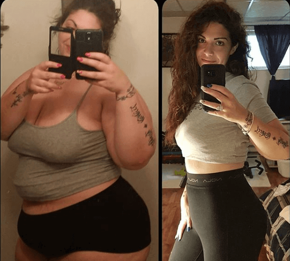Πώς έβαλα τέλος στις δίαιτες και άρχισα να χάνω βάρος
Η δίαιτα Ντουκάν μου προκάλεσε υπογλυκαιμικό κώμα, απομονώθηκα πλήρως από τον έξω κόσμο και άρχισα να μισώ το λίπος μου περισσότερο από ποτέ. Όταν η κατάστασή μου βελτιώθηκε λίγο, συνειδητοποίησα ότι τα πράγματα δεν μπορούν να συνεχιστούν έτσι. Σε μια τελευταία προσπάθεια, αποφάσισα να πάω και να δω έναν ψυχαναλυτή.
Ήθελα μόνο ένα πράγμα - να θέσω τέλος σε αυτό τον πόνο με οποιοδήποτε κόστος. Η ψυχαναλύτριά μου ήταν μια τέλεια επαγγελματίας και μια εκπληκτική γυναίκα. Ήταν λεπτή, περιποιημένη, ήρεμη - μια προσωποποίηση κάποιας που θα μπορούσατε να εμπιστευτείτε.
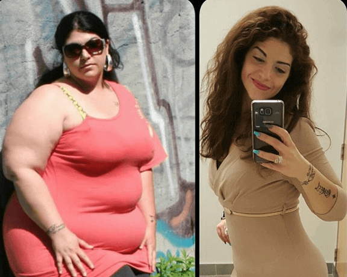Όχι μόνο με έσωσε από τις σκοτεινές και αυτοκτονικές σκέψεις μου, αλλά ήταν και αρκετά ευγενής για να μοιραστεί τη δική της εμπειρία. Όπως αποδείχθηκε, η δρ. Αλεβίζου είχε περάσει από την κόλαση της πείνας και της δίαιτας μέχρι που βρήκε έναν ορθολογικό τρόπο να χάσει βάρος χωρίς να βλάπτει την υγεία της.
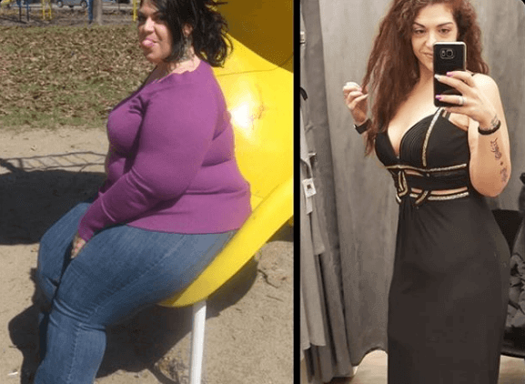Ο ευκολότερος τρόπος να χάσετε βάρος
Στη Διαιτολογία υπάρχει μια προσέγγιση που ονομάζεται διαισθητική διατροφή. Απαιτεί να τρώτε μόνο εάν και όταν είστε πεινασμένοι, και μπορείτε να φάτε οτιδήποτε χρειάζεται το σώμα σας.
Είναι αρκετά δύσκολο να αρχίσετε ξαφνικά να «ακούτε» το σώμα σας και να τρώτε μικρότερα γεύματα. Οι διατροφολόγοι έχουν αναπτύξει ένα ειδικό προϊόν για να μικρύνουν το ξεχειλωμένο στομάχι σας και να σας βοηθήσουν να μάθετε να τρώτε λιγότερο. Λέγεται .
Βοήθησε τη δρ. Αλεβίζου να χάσει 52 κιλά . Μου συνέστησε να το δοκιμάσω κι εγώ. Δεν χρειαζόταν να ακολουθήσω καμία διατροφή και η άσκηση δεν ήταν υποχρεωτική. Το μόνο που απαιτείται από εμένα ήταν να ακολουθώ τη δοσολογία και να συνεχίσω να λαμβάνω το προϊόν τακτικά.
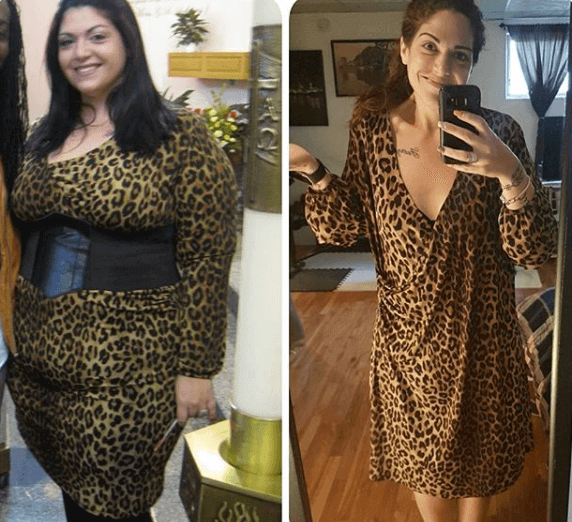Τα πρώτα σοβαρά αποτελέσματα
Μόλις αγόρασα το άρχισα να το χρησιμοποιώ σύμφωνα με τις οδηγίες. Δεν μπορώ να πω ότι άρχισα αμέσως να χάνω πολύ βάρος, αλλά από τις πρώτες μέρες που το χρησιμοποίησα, παρατήρησα ότι συχνά δεν ήθελα να τελειώσω τα γεύματά μου και αυτό ήταν κάτι που δεν με στεναχωρούσε καθόλου.
Μια εβδομάδα αργότερα, εμφανίστηκαν τα πρώτα αποτελέσματα: τα ρούχα μου ήταν χαλαρά. Τότε ήταν που για πρώτη φορά είχα το θάρρος να ζυγιστώ. Για πρώτη φορά μετά από πολύ καιρό, δάκρυσα από ευτυχία: σύμφωνα με τη ζυγαριά μου, είχα χάσει 10 ΚΙΛΑ!
10 κιλά μετά από μόλις μια εβδομάδα!
Περιττό να πω, ότι έζησα μια έκρηξη θετικών συναισθημάτων όταν ζυγίστηκα ξανά λίγες μέρες αργότερα (-12 κιλά, -13 κιλά μετά από μερικές ημέρες)! Ήμουν γεμάτη από ενδορφίνες. Το άσχημο παντελόνι της γιαγιάς ήταν επιτέλους πάρα πολύ μεγάλο για μένα!
Τον πρώτο μήνα, ΕΙΧΑ ΧΑΣΕΙ 45 ΚΙΛΑ!
Από τον δεύτερο μήνα, η διαδικασία απώλειας βάρους επιβραδύνθηκε λίγο, αλλά εξακολουθούσα να χάνω 7-10 κιλά την εβδομάδα. Ήταν ένα απίστευτο αποτέλεσμα ούτως ή άλλως. Έπρεπε να αγοράσω καινούργια ρούχα και σχεδόν μπορούσα να αγοράσω κάποια εφαρμοστά φορέματα... Δύο μήνες αργότερα δεν μπορούσα να αντισταθώ πια και αγόρασα ένα πραγματικά σέξι ρούχο που με έκανε να φανώ απίστευτα ελκυστική. Ήμουν στον έβδομο ουρανό.
Εκείνη την εποχή, η ένδειξη της ζυγαριάς με ικανοποιούσε: Ζύγιζα 60 κιλά (το ύψος μου είναι 1,76) Έως ότου σταμάτησα να παίρνω το , δεν είχα πάρει ούτε ένα γραμμάριο βάρους. Αυτό που επίσης είναι σημαντικό, χάρη σε μια τέτοια ορθολογική προσέγγιση στο αδυνάτισμα, το δέρμα μου δεν έμεινε χαλαρό και τα στήθη μου είναι τέλεια.
Πως δουλεύει το ;
Φυσικά, δεν έχει καμία σχέση με την ανάπτυξη της «διαίσθησης» σας. Απλά μεταμορφώνει το σώμα σας, βοηθώντας το να κατανοήσει τις δικές του ανάγκες. Ένα γεμάτο στομάχι στέλνει αμέσως ένα μήνυμα στον εγκέφαλο για την ανάγκη να σταματήσετε να τρώτε το γεύμα σας.
Η σύνθεση του περιλαμβάνει φυτικά συστατικά όπως μαλτοδεξτρίνη, απομονωμένη πρωτεΐνη σόγιας, ίνες βρώμης και σκόνη καφέ, που βελτιώνουν το νευρικό σύστημα και τη λειτουργία του εγκεφάλου και ομαλοποιούν την ορμονική ισορροπία.
Ως αποτέλεσμα, σας βοηθά να αποφύγετε το άγχος, να απαλλαγείτε από τις τοξίνες και να επιταχύνετε τον μεταβολισμό και την κυκλοφορία του αίματος. Είναι η ολοκληρωμένη επίδραση σε όλα τα συστήματα του σώματος που οδηγεί στην εξομάλυνση της διατροφής σας.
Χρειάστηκα δύο μήνες για να μάθω πώς να τρώω διαισθητικά. Τώρα έχω μηδενικούς πόθους για γλυκό και αμυλούχο φαγητό, μια φέτα πίτσας είναι αρκετή για μένα για να αισθάνομαι χορτάτη και είμαι απολύτως αδιάφορη για τα μπέργκερ, εκτός κι αν το σώμα μου χρειάζεται ένα για κάποιο λόγο.
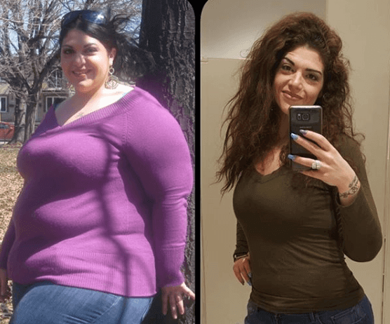Η ζωή μετά την απώλεια βάρους
Μετά την απώλεια βάρους, η ζωή μου άλλαξε δραματικά. Αντί για σαρκαστικά σχόλια, ακούω κομπλιμέντα από τους άνδρες και νοιώθω βλέμματα ζήλιας από τις γυναίκες. Αυτό το αίσθημα της απόλυτης ευτυχίας δεν μπορεί να εκφραστεί με λόγια, μπορείς μόνο να το βιώσεις.
Έφυγε ένα τεράστιο βάρος από τους ώμους μου. Νοιώθω σαν πεταλούδα. Αισθάνομαι καλύτερα, είναι ευκολότερο να ξυπνήσω το πρωί και έχω πολύ ενέργεια και ζωτικότητα. Τώρα δεν μπορώ να πιστέψω ότι κάποτε δεν μπορούσα ανέβω στον τρίτο όροφο χωρίς δύσπνοια και τρελή ταχυπαλμία.
Χρειάστηκε να αλλάξω εντελώς την ντουλάπα μου. Τα ρούχα μου φαίνονται τέλεια πάνω μου. Δεν υπάρχει ούτε μια ζάρα στο στομάχι μου για να μου θυμίζει ότι ήμουν τόσο τεράστια σαν ένας ελέφαντας. Το στομάχι μου είναι επίπεδο τώρα!
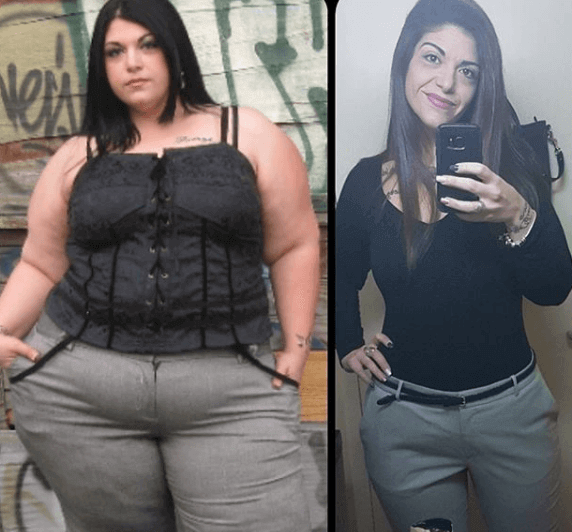Που θα αγοράσετε το ;
Προσωπικά, δεν έχω δοκιμάσει κάτι ευκολότερο, καλύτερο και υγιέστερο από αυτή τη μέθοδο, έτσι σας το συστήνω ολόψυχα. Υπάρχει μόνο ένα πράγμα για το οποίο δεν μπορώ να σας βοηθήσω. Δεν ξέρω σε ποια καταστήματα ή φαρμακεία είναι διαθέσιμο. Εγώ το παράγγελνα πάντα από την ιστοσελίδα του κατασκευαστή . Είναι φθηνότερο εκεί και δεν υπάρχει κίνδυνος να πάρετε ένα παραποιημένο προϊόν. Αν επιθυμείτε να το παραγγείλετε, σας παραθέτω τον παρακάτω σύνδεσμο στον ιστότοπο του κατασκευαστή.
Καλή τύχη αγαπητοί μου. Είμαι σίγουρη ότι θα τα καταφέρετε. Θα χαρώ να διαβάσω τα σχόλιά σας. Ίσως, μερικοί από εσάς έχουν ήδη χάσει το βάρος με το ; Μοιραστείτε τις ιστορίες σας. Φιλιά
Σχόλια
Η δίαιτα Ντουκάν είναι απαίσια! Τη δοκίμασα για λίγες μέρες και το συνειδητοποίησα γρήγορα, είναι καλύτερα να τρώτε κανονικά από το να εγκαταλείψουμε τη πράσινη σαλάτα και τα φρούτα. Αισθανόμουν χάλια: είχα ζαλάδες, φούσκωμα, δυσκοιλιότητα κλπ. Ο εγκέφαλός μου δεν είχε αρκετή γλυκόζη, οπότε δεν θα μπορούσα να επικεντρωθώ σε απλά πράγματα και η όρασή μου χειροτέρεψε. παίρνω το τώρα. αισθάνομαι υπέροχα και συνεχίζω να χάνω τα περιττά κιλά.
Συγχαρητήρια που δεν τα παράτησες! Μια νίκη με το υπερβολικό βάρος είναι πάντα μια γιορτή, το έχω βιώσει και εγώ η ίδια. Μπράβο!
Αγαπώ το :) Έχω χάσει 27 κιλά σε 35 ημέρες... χωρίς άσκηση... Ξέρετε, μισώ να γυμνάζομαι. Δεν μπορώ να πιστέψω την επιτυχία μου! :-)
Η αδερφή μου έκανε τη δίαιτα Ντουκάν... Ναι, έχασε 18 κιλά... Αλλά κάνει ΑΙΜΟΚΑΘΑΡΣΗ εδώ και 3 χρόνια τώρα!!! Πρέπει να βρίσκεται στο μηχάνημα αιμοκάθαρσης για 4 ώρες 3 φορές την εβδομάδα!!! Για το υπόλοιπο της ζωής της! Δεν μπορεί να χάσει ούτε μια επίσκεψη - διαφορετικά τα νεφρά της θα τελειώσουν... Αυτό είναι το τίμημα που έπρεπε να πληρώσει για την απώλεια βάρους της. Η μεταμόσχευση νεφρού είναι η μόνη λύση αλλά πρέπει να βρει έναν δότη και να πληρώσει πολλά χρήματα για τη χειρουργική επέμβαση...
Πάντα ζύγιζα 80-85 κιλά και δεν με προβλημάτιζε. Η προσωπική μου ζωή δεν ήταν καλή. Νομίζω ότι ήρθε τώρα η ώρα να κάνω οικογένεια και να αποκτήσω παιδιά. Οι αξιοπρεπείς άνδρες ούτε καν θα κοιτάξουν προς εμένα. Είναι ίσως η σειρά μου να χάσω βάρος...
Έκανα τη Ντουκάν για 3 μήνες το 2006. Το στόμα μου μύριζε ακετόνη και άρχισα να έχω τρομερούς πόνους στην αριστερή μου πλευρά. Ήθελα να χάσω μόλις 3 κιλά. Ήταν για μένα εύκολο να χάσω μερικά κιλά. Το μόνο που έπρεπε να κάνω ήταν να μην τρώω και να είμαι σωματικά ενεργή για μια μέρα. Εναλλακτικά, δεν θα έτρωγα ψωμί και κρέας για μια εβδομάδα. Αλλά μετά από τη Ντουκάν, άρχισα να παίρνω 7-10 κιλά ετησίως. Και δεν έτρωγα και πάρα πολύ! Ήμουν φουσκωμένη όπως ο Γουίνι το Αρκουδάκι. Άρχισα να αντιμετωπίζω προβλήματα με το πάγκρεας και να υποφέρω από αργό μεταβολισμό και κιρσούς. Ακόμα αναρρώνω: το βάρος μου συνεχίζει να έχει διακυμάνσεις. Θα ήθελα να δοκιμάσω το γιατί συνιστάται από ειδικούς απώλειας βάρους.
Δεν θα σας συνιστούσα να αγοράσετε το από μαγαζιά με συμπληρώματα διατροφής, επειδή υπάρχουν πολλά πλαστά προϊόντα. Ο επίσημος δικτυακός τόπος εγγυάται ότι θα έχετε το γνήσιο προϊόν. Το αγοράζω από εκεί. Έχω λίγο παραπάνω βάρος για να χάσω.
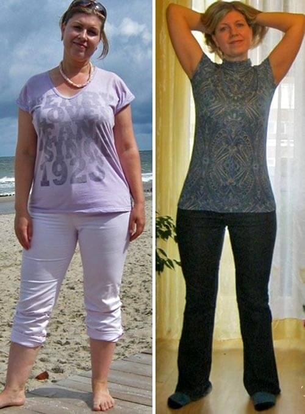Πω πω! Το θέλω και εγώ αυτό! Προχωράω στην παραγγελία αμέσως. Θα σας κρατάω ενήμερους.
Επιτρέψτε μου να καυχηθώ για τα αποτελέσματά μου! Χάρη στο , έχασα 40 κιλά σε 6 εβδομάδες J
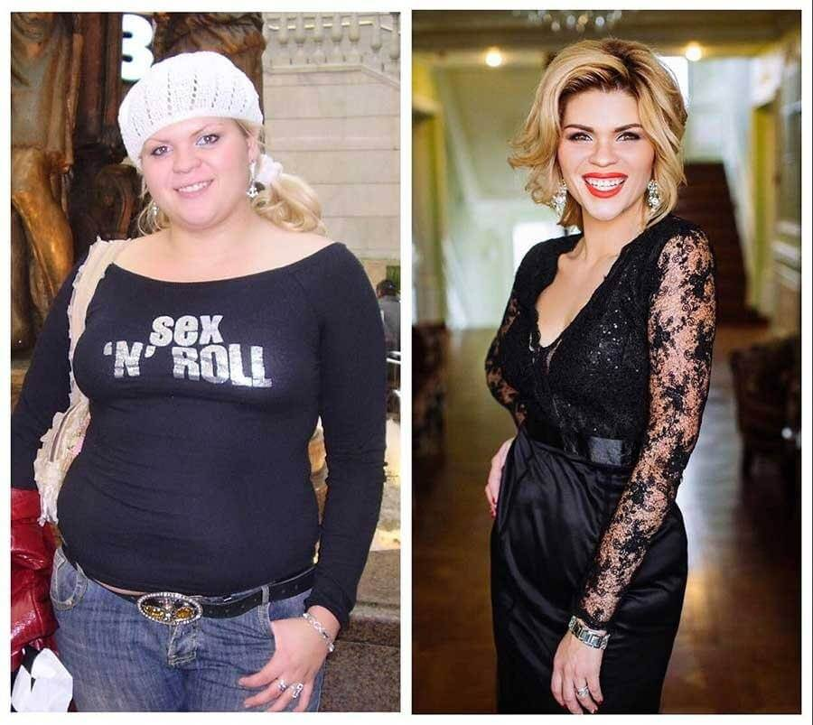Μπράβο! Και για καθένα που έχει χάσει βάρος! Είστε οι ήρωές μου! Ευχαριστώ για το κίνητρο!
Καμία δεν έγραψε ότι αγαπά τον εαυτό της όπως είναι. Έχετε όλες χάσει το μυαλό σας
Τι ακριβώς λες; Πώς μπορεί κάποια να αγαπάει τον εαυτό της όταν ζυγίζει 120 κιλά; Εν πάση περιπτώσει, είναι ΠΟΛΥ επικίνδυνο για την υγεία. Θα έπρεπε να σκεφτείς λίγο πριν γράψεις αυτή την ανοησία!
Μη δίνεις σημασία. Τέτοιου είδους πράγματα γράφονται από νεαρές γυναίκες των οποίων το επιπλέον βάρος δεν υπερβαίνει τα 5 κιλά και δεν έχουν ακόμη αντιμετωπίσει κάποια σοβαρή ασθένεια.
Κοιτάξτε τι έκανε δίαιτα σε μένα. Είμαι εγώ στη φωτογραφία, ένα χρόνο μετά τη Ντουκάν. Στην αρχή έχασα 27 κιλά σε ένα χρόνο, αλλά μετά πήρα 67 κιλά επιπλέον. Άρχισα να αντιμετωπίζω τρομερά προβλήματα υγείας και πήρα τα επιπλέον κιλά. Έκανα θεραπεία με αντιβιοτικά και σταμάτησα να παίρνω βάρος. Μόνο μετά από τρία χρόνια ζωής με σώμα που έμοιαζε με ελέφαντα, προσπάθησα να αρχίσω να τα χάσω ξανά, αλλά αυτή τη φορά ήμουν πιο σοφή. Δεν ήμουν σε θέση να ακολουθήσω τη διαισθητική διατροφή μόνη μου, αλλά το με βοήθησε. Έχασα σχεδόν 80 κιλά μετά από 5 θεραπείες. Δεν το παίρνω πια γιατί έμαθα να τρώω ανάλογα με τις ανάγκες μου και να συνεχίζω να χάνω βάρος.
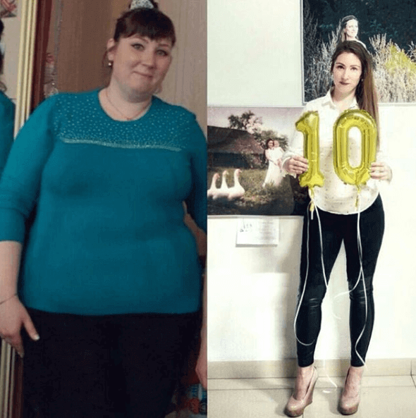Έχω δοκιμάσει πάμπολλες μεθόδους απώλειας βάρους. Μπορώ με σιγουριά να πω ότι το είναι πραγματικά ένα εξαιρετικό προϊόν για την επιτάχυνση του μεταβολισμού. Εάν η υγιής απώλεια βάρους λειτουργεί για σας, αυτό το προϊόν θα ήταν μια τέλεια λύση.
Δεν καταλαβαίνω γιατί όλοι εγκωμιάζουν τη συγγραφέα αυτού του άρθρου; Δεν έδειξε καμία δύναμη θέλησης, απλώς χρησιμοποίησε κάποιο ποτό για απώλεια βάρους, αυτό έκανε μόνο. Ίσως δεν καταλαβαίνω κάτι, αλλά τι καλό έκανε;
Τουλάχιστον τόλμησε να ξεκινήσει τη διαδικασία απώλειας βάρους και δεν παραιτήθηκε! Όταν είσαι υπέρβαρη, πίστεψε με, δεν είναι τόσο εύκολο!
Αυτό δεν είναι μόνο «κάποιο ποτό απώλειας βάρους», όπως το έθεσε, αλλά ένα προϊόν για τη ρύθμιση της διατροφικής συμπεριφοράς και την εξομάλυνση των μεταβολικών διεργασιών. Είναι αδύνατο να το επιτύχεις μόνη σου. Το παρέχει ένα ολοκληρωμένο αποτέλεσμα. Σε χαλαρώνει, σου δίνει ενέργεια και καταστέλλει την πείνα. Όταν σταμάτησα να το παίρνω, η ανάγκη μου για φαγητό δεν επανεμφανίστηκε. Το βάρος μου είναι σταθερό εδώ και ένα χρόνο τώρα.
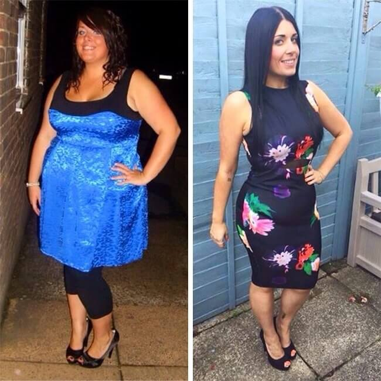